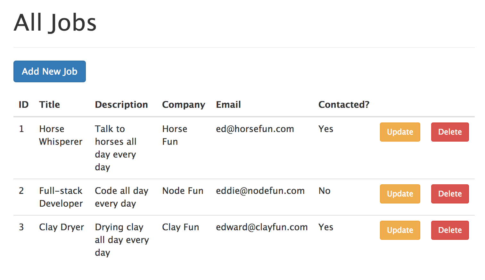

class: center, middle # End-to-End Testing with TestCafe  <br> *March 20th, 2017* --- # Agenda 1. `whoami`? 1. End-to-End Tests? 1. Why TestCafe? 1. Examples 1. Next Steps --- # `whoami` #### Day job: I've been at [Galvanize](http://www.galvanize.com/) since May 2015... 1. ~~Lead Instructor Full Stack~~ 1. ~~Curriculum Developer~~ 1. Senior Software Engineer #### Also: 1. Co-founder/author of [Real Python](https://realpython.com) 1. Mentor at [Thinkful](https://www.thinkful.com/) 1. OSS - [discoverflask.com](discoverflask.com), [github.com/mjhea0/](github.com/mjhea0/) #### More: 1. Resume @ [mherman.org](http://mherman.org/) 1. 😍 - tech writing, [financial models](http://www.starterfinancialmodel.com/), radiohead, chilling --- # End-to-End Tests? <img src="./images/test-pyramid.png" style="max-width:275px;background:none;border:none;box-shadow:none;"> Summary: 1. Tests grow in size and complexity as you move up the pyramid. 1. Tests at the top cost more to setup and maintain than tests at the bottom. Split: - 70% unit - 20% integration - 10% e2e --- # Why TestCafe? - Unlike the majority of other end-to-end (e2e) testing tools, TestCafe is **not** dependent on *Selenium* or *WebDriver*. Instead, it injects scripts into the browser to communicate directly with the DOM and handle events. (1) `npm install testcafe` (2) start tesing!!! - It works on any modern browser that supports HTML5 without any plugins. - Further, it supports all major operating systems and can run simultaneously on multiple browsers and machines. - nice `async/await` syntax --- ## Examples Let's test a simple Node app...  CRUD: 1. [Get ALL jobs](https://github.com/mjhea0/testcafe-example/blob/master/tests/jobs.js#L14) 1. [Add Job](https://github.com/mjhea0/testcafe-example/blob/master/tests/jobs.js#L23) 1. [Update Job](https://github.com/mjhea0/testcafe-example/blob/master/tests/jobs.js#L42) 1. [Delete Job](https://github.com/mjhea0/testcafe-example/blob/master/tests/jobs.js#L62) --- ## Next Steps 1. Grab the code -> [https://github.com/mjhea0/testcafe-example](https://github.com/mjhea0/testcafe-example) 1. Read the blog post -> [Functional Testing with TestCafe](http://mherman.org/blog/2017/03/19/functional-testing-with-testcafe) at [mherman.org](http://mherman.org/) <br> <br> <br> <br> :)